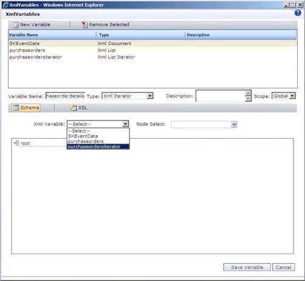
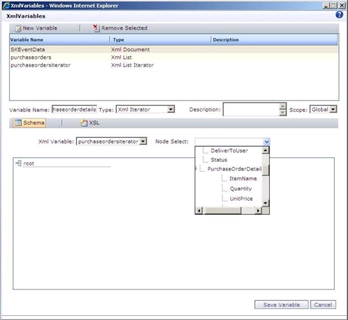
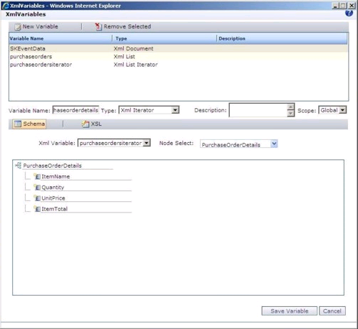

No
Creating an XML Iterator Type XML Variable for Grid Items
XML Iterator type XML variable is used to iterate though the child items (grid items) of a list item in a workflow.
To create an XML Iterator type XML Variable for grid items
- Right-click the Start Activity, and select Activity Properties.
- Click the edit icon in the XMLVariables field. The XMLVariables screen appears, with the list of the existing XML variables.
- You have to create a XML List Iterator type XML variable before creating XML Iterator type XML variable. If you have already created XML List Iterator type XML variable, you can proceed to the following step. See Creating XML List type XML Variable to create XML List XMLvariable.
- Click New Variable to add a new variable.
- Type a variable name in the Variable Name field.
- Select XML Iterator from the Type drop-down list.
- Select a XML Variable from the XML Variable drop-down list as shown in the following screen.
Note: If you need to loop through the grid items of an item while iterating through the list items, you need to select the respective XML List Iterator type XML variable.

- Select a repeating node from the Node Select drop-down list. Select the XML node which is mapped for the grid in the list.

- When you select a node, the following screen is displayed.

- Click Save Variable. The message 'Variable Updated' is displayed. Close the window.